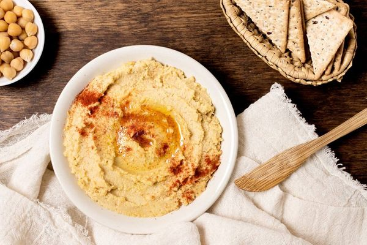

Hummus

Description
Hummus is a Middle Eastern spread made from cooked, mashed chickpeas blended with tahini, lemon juice, and garlic. The standard garnish includes olive oil, a few whole chickpeas, parsley, and paprika.
In Middle Eastern cuisine it is usually eaten as a dip with pita bread while in the West is often served as a snack or appetizer with crackers.
Ingredients
- 500 grams dry chickpeas
- 1/2 cup tahini
- 1/2 cup olive oil
- 1/2 cup lemon juice
- 3 cloves of garlic
- Water as needed
- For seasoning:
- Salt
- Onion powder
- Paprika
- Cumin
- Coriander
- Pepper
- Parsley
Steps
- Place chickpeas into a large container and cover with at least 5 centimeters of cool water; let stand at least 12 hours.
- Transfer the drained chickpeas to a large pot and add enough water to cover the beans like in the previous step. Cook until very tender, about 2 hours. Drain the beans and let rest until it reaches room temperature.
- In a food processor, combine the all the ingredients and add some water. Mix for a few minutes and add more water as needed for desired consistency. Continue to mix for about 15 minutes until smooth and warm.
- Serve warm of chilled in a bowl, garnish with olive oil, paprika and parsley.
Other recipes